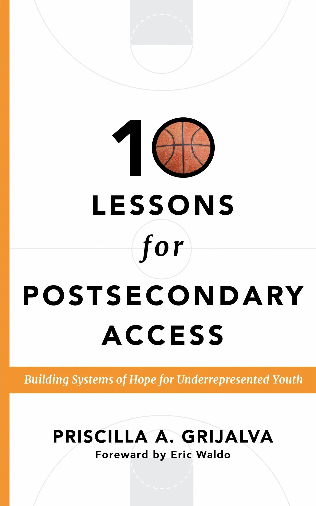

Book
#1 New Release Best Seller on Amazon for College Counseling, Financial Aid, and Career Development Counseling!

This practical guide provides both inspiration and actionable strategies for educators committed to equity and student success.
Inside this book, you will learn how to:
- Build schoolwide systems that expand postsecondary opportunities
- Use data to identify and close equity gaps
- Demystify financial aid and scholarship pathways
- Implement MTSS frameworks to support college and career readiness
- Create partnerships with colleges, military recruiters, and community organizations
- Celebrate student success in ways that foster belonging and hope
Through real-world stories, replicable strategies, and leadership insights, this book offers a clear roadmap for school counselors, counselor educators, and graduate students who are committed to ensuring every student—especially those historically underserved—has access to meaningful postsecondary pathways.
A Message of Hope
At its core, 10 Lessons for Postsecondary Access reminds educators that when hope is paired with intentional systems, students thrive—and entire communities can change.
Amazon Reviews
What Readers Are Saying
★★★★★
Great addition to the educator’s toolbox.
Practical advice for educators presented in a meaningful way! Very enjoyable to read.
★★★★★
Great book for supporting postsecondary access!
This book offered so many in depth strategies for support students with post secondary planning. I loved seeing actual pictures of students and activities that were utilized. This book is perfect for school counselors of all grades and experience levels. Also, I love basketball and it was cool to learn about Priscilla’s shared passion for hoops!
★★★★★
What a fantastic resource for high school counselors!
Wow! What a great resource for counselors! Having been a high school educator for 41 years, I can easily recognize the value of Ms. Grijalva’s very informative book. If every counselor in America used the ideas, methods, and strategies she writes about, our nation’s students would be well prepared for their future after high school.
★★★★★
More Than a Counselor: How Priscilla Inspires Students to Succeed
In 10 Lessons for Postsecondary Access, Priscilla shares systems, strategies, and stories that school counselors can use to help their students. Her approach isn’t one-size-fits-all; she shows what worked for her and encourages others to adapt and make a difference in their schools. … As a recruiter for the Army, I’ve seen many counselors, but Priscilla stands out for her commitment to putting students first. … and learn how Priscilla achieves real results.